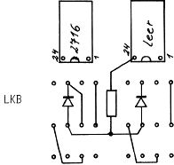

Nascom Journal |
Juni 1982 · Ausgabe 6 |
Dies ist ein Hardware-Tip, wie man ein EPROM 2716 in den Nascom2 einbaut, ohne irgendwelche Leiterbahnen zu durchtrennen. Ich habe einen Sonntagnachmittag damit verbracht, dies auszutüfteln. Warum soll sich ein anderer unbedingt dieselbe Arbeit machen?

Widerstand 10 K
Diode 1N 4448 o.ä.
Beschaltung des LKS 1
je nach Anfangsadresse des bestückten Sockels.
Beispiel für B5, B6 Sockel
Dyn. RAM- Erweiterung
Eprom auf B000
Um alle Sockel zu nutzen, müßte man wohl das N2MD PROM ändern.
Für manche Benutzer ist es notwendig, Assemblerlistings von ASM Assembler an ZEAP 2.0 anzupassen (z.B. Programmtausch auf Cassette). Die Anpassung bereitet keine großen Schwierigkelten.
Der Textpuffer des ASM (#1000) beginnt mit der freien Adresse nach dem Textpuffer (z.B. #24CC). Er wird durch # 00 FF abgeschlossen.
Der Puffer des ZEAP (normalerweise auch #1000) ist folgendermaßen aufgebaut:
Pufferlänge : LB HB (inklusive Endzeichen)
Zeilenzahl mal 2 LB MB HB
dann Nummer der ersten Zeile in Dez wie bei ASM
Das Endzeichen des Textpuffers ist 00 FF 00,
Bei der Anpassung ist also zunächst die Pufferlänge einzutragen (in unserem Beispiel CC 14) dann die Anzahl der Zeilen in Hex (deshalb empfiehlt es sich durch den Renumber Befehl immer den gleichen Zeilenabstand einzuhalten, damit man die Zahl genau errechnen kann). Nehmen wir an, der Sourcecode habe eine Länge von 50 Zeilen. Dann wäre ab #1002 einzutragen 64 00 00.
Nun muß man nur noch das Endzeichen des ASM in 00 FF 00 verändern und den ZEAP warmstarten. (Der Kaltstart vor der ganzen Prozedur ist selbstverständlich).
Die erste Zeile ist nun unvollständig, weil ihre Zeilennummer von der Zeilenanzahl überschrieben wurde; das kann durch editieren leicht korrigiert werden. Das Programm steht nun für ZEAP zur Verfügung.
Suche Integer Pascal auf Cassette für Nassys 1
Hermann Lottes
__________._
____ ________
| Seite 22 von 24 |
|---|